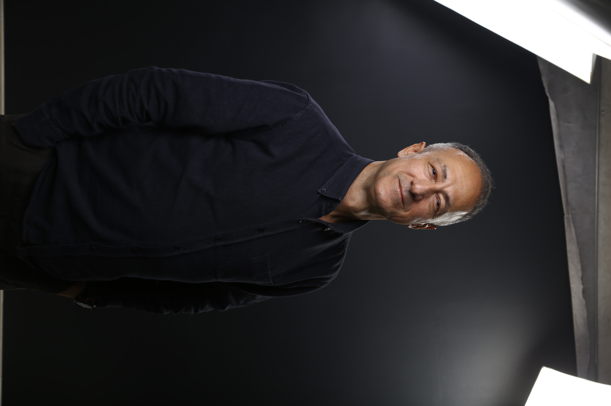
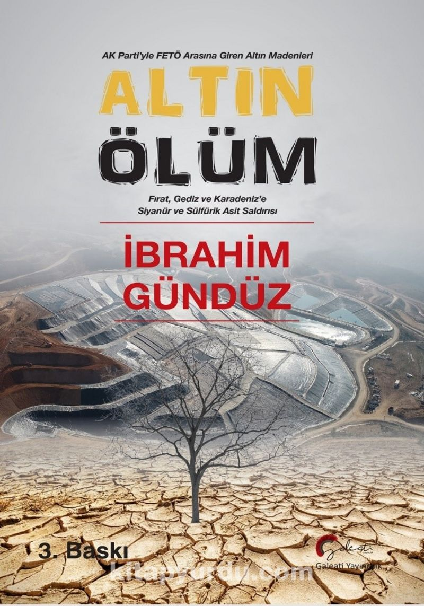
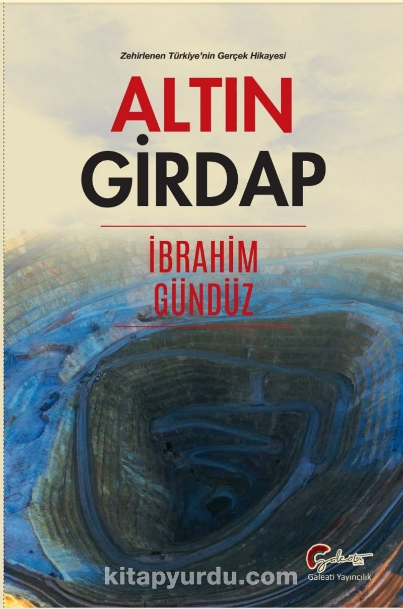
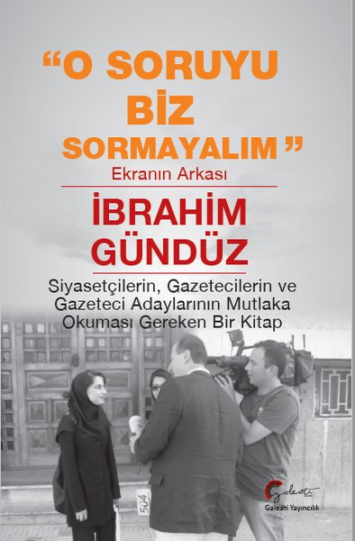
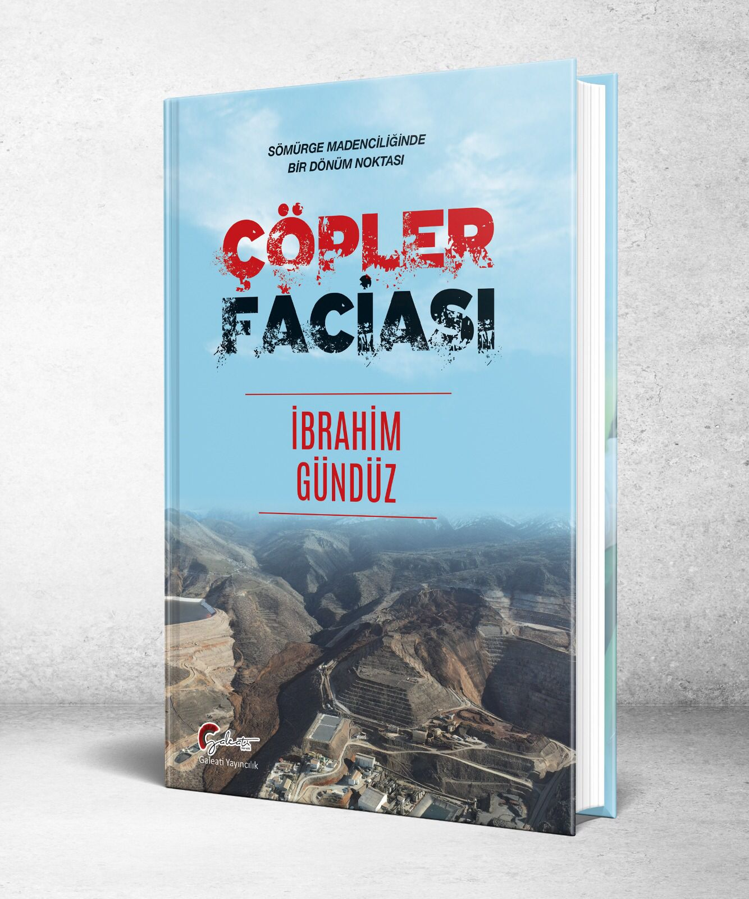
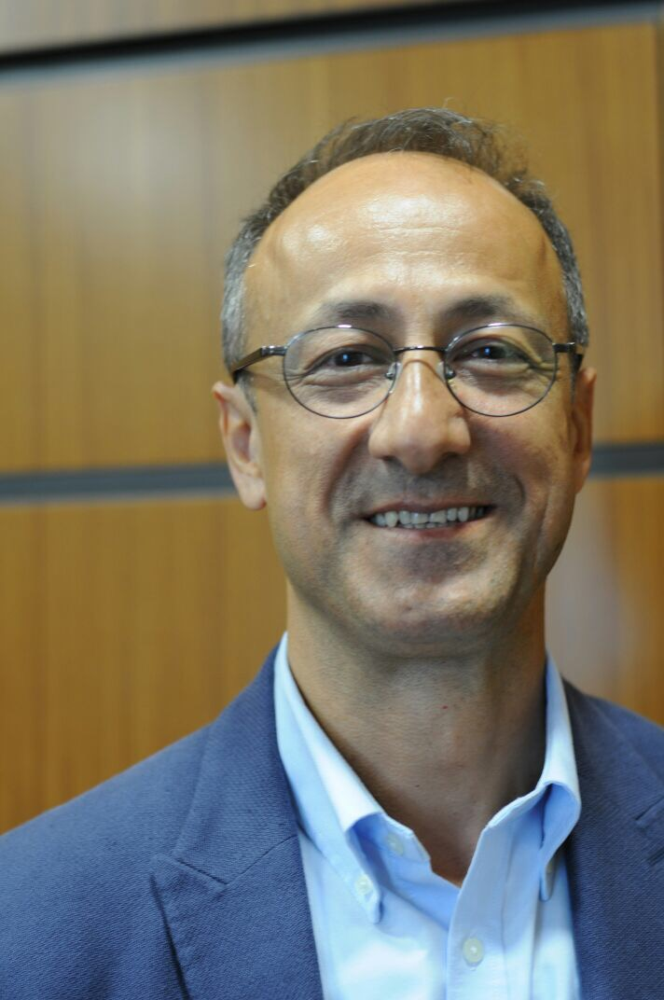

Gazeteciliği hayatının merkezine koyan; çevre ve vahşi madencilik konularında yazan bir yazar.

İngilizce dilinde akademik makaleler ve çalışmalar
Yayınlanmış eserlerim ve detaylı incelemeleri

Siyanürlü altın madenciliğinin ekolojik etkilerini ele alan kapsamlı bir inceleme.

Siyaset-ticaret ilişkilerini ve maden kararlarının perde arkasını anlatan bir çalışma.

Gazetecilik mesleğinin mevcut durumunu ve medya dünyasının itiraflarını içerir.

Erzincan İliç’teki Çöpler altın madeni faciasını ve sorumluluk zincirini belgeleyen bir çalışma.

Ankara Üniversitesi İletişim Fakültesi'nden mezun oldum. Kariyerime 1987 yılında Güneş Gazetesi'nde stajyer olarak başladım ve önce gece muhabirliği, ardından belediye muhabirliği ve siyasi parti muhabirliği görevlerinde bulundum.
Günaydın ve Sabah gazetelerinde diplomasi muhabiri olarak görev yaptım. Bu süreçte Asya, Avrupa, Amerika ve Afrika kıtalarında birçok ülkeyi ziyaret ettim ve NATO, AB Zirvesi gibi uluslararası toplantılar ile Pakistan Depremi gibi doğal afet olaylarını haberleştirdim.
Televizyon kariyerimde 1999-2004 yılları arasında ATV parlamento muhabiri olarak, ardından 2018 yılına kadar Kanal D adına aynı görevi sürdürdüm.
Bugüne kadar "Altın Ölüm" (2020), "Altın Girdap" (2022), "O Soruyu Biz Sormayalım. Ekranın Arkası" (2022) ve "Çöpler Faciası" (2024) isimli kitaplarım yayınlandı. Şu anda çeşitli internet platformlarında ağırlıklı olarak çevre ve vahşi madencilik konularında yazılar yazarak serbest gazeteci olarak çalışmalarımı sürdürüyorum.
Prof. Dr. Zuhal Yeşilyurt Gündüz ile evliyim ve Aşkın ve Barış adında iki çocuğum var.
Medya ve gazetecilik alanındaki önemli dönüm noktalarım
Ankara Üniversitesi İletişim Fakültesi'ni bitirdikten sonra Güneş Gazetesi'nde stajyer olarak gazetecilik kariyerime başladım. Gece muhabirliği, belediye muhabirliği ve siyasi parti muhabirliği görevlerinde bulundum.
İngiltere'de iki yıl dil eğitimi aldıktan sonra, Günaydın ve Sabah gazetelerinde diplomasi muhabiri olarak görev yaptım. Bu dönemde dünyanın birçok ülkesini ziyaret ederek NATO, AB Zirvesi gibi uluslararası toplantıları ve Pakistan Depremi gibi doğal afet olaylarını haberleştirdim.
ATV kanalında parlamento muhabiri olarak görev yaptım. Türkiye Büyük Millet Meclisi'ndeki gelişmeleri takip ederek siyasi haberleri ekranlara taşıdım.
Kanal D adına parlamento muhabiri olarak görevime devam ettim. Bu süreçte Türkiye'nin siyasi gündemini yakından takip ederek izleyicilere aktardım.
"Altın Ölüm" (2020), "Altın Girdap" (2022), "O Soruyu Biz Sormayalım. Ekranın Arkası" (2022) ve "Çöpler Faciası" (2024) kitaplarımı yayınladım.
Çeşitli internet platformlarında serbest gazeteci olarak çalışmalarımı sürdürüyorum. Ağırlıklı olarak çevre ve vahşi madencilik konularında makaleler ve haberler yazıyorum.